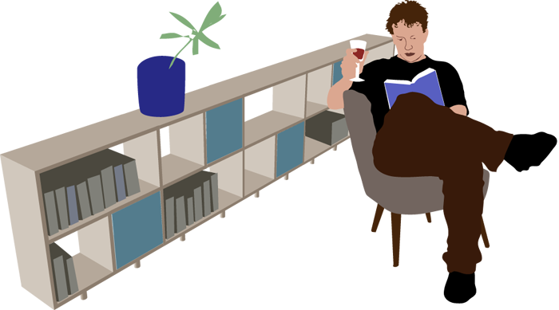

An experienced design leader that can help your company grow with a serious AI supported design system, supporting accessibility compliance and improving usability and efficiency.
With experience running user testing experiments and A/B testing with international testers and disabled testers to increase conversion by learning how users interact with the product.
I'm the UX Director at IDnow, based in Munich, where I've led design since December 2019. My team works across identity verification flows — NFC-based checks, live agent video calls, and fully automated verification — balancing usability, regulatory accessibility requirements (EAA/WCAG), and product quality at scale.
I hold a BFA in Industrial Design from RISD, and alongside my role at IDnow I take on freelance design work. I'm fluent in English and German.
Designing trustworthy, low-friction flows for document and biometric checks.
EAA and WCAG-compliant design across web and mobile verification products.
Exploring how AI tools change design practice, from prototyping to research.
Building and guiding a small, focused product design team.